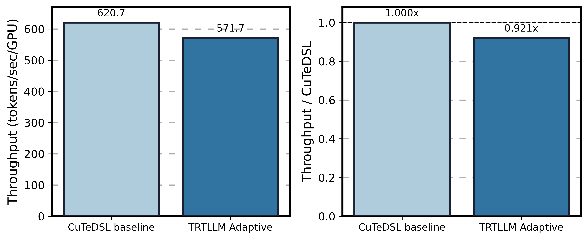

Qwen3-235B Forced 32K MXFP8 Backend Comparison
Ptyche jobs 2506677 and 2506829; vLLM 0.25.1, FlashInfer 0.6.13, CUDA Graph, two TP4/EP4 replicas on 8 GB200 GPUs.

| Dense MXFP8 policy | tokens/sec/GPU | vs CuTeDSL | Generation time (s) |
|---|---|---|---|
| CuTeDSL baseline | 620.73 | 1.000x | 422.32 |
| TRTLLM Adaptive | 571.69 | 0.921x | 458.54 |
Result: TRTLLM Adaptive reached 0.921x CuTeDSL throughput, a 7.9% regression. Increasing OSL to a true 32K did not recover an Adaptive advantage.
Matched methodology
Each arm processed 64 requests with exactly 32,768 generated tokens per request (2,097,152 total engine tokens). The configuration used ignore_eos=true, an empty stop-token list, aggregate concurrency 64, max_num_seqs=32 per replica, and max_num_batched_tokens=16384.
Lookup coverage
The forced-32K trace observed 5 unique dense GEMM signatures across 40 records. All five signatures matched the qualified lookup table, so this result is not explained by unseen-shape fallback.
Interpretation
The dense TRTLLM path is active and exact tactics are available, but end-to-end generation remains dominated by work outside the optimized dense LM-head GEMM. Backend conversion and dispatch costs, plus MoE and attention execution, outweigh the isolated tactic benefit for this workload.
Provenance
nemo_rl_commit=85bba26a25807af34fe48014290ee04dbdd2c42c custom_vllm_commit=658d7b1571a914bee7df48f717c2a428ee7c45ad tactic_sha256=2b8121d1b56ccb44a4ee9bdb10adc5e355f58bf21e79079eadeb2ac7494bf417